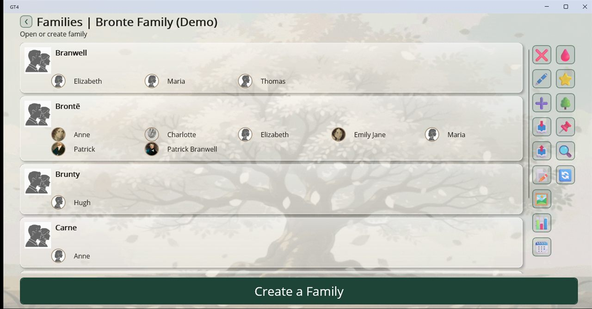
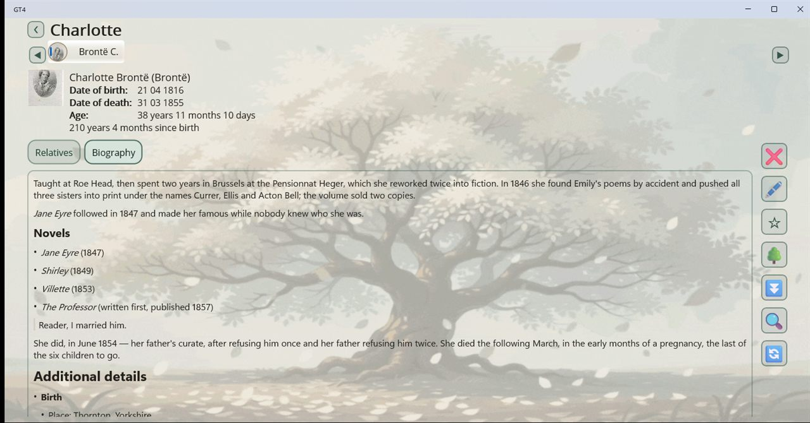
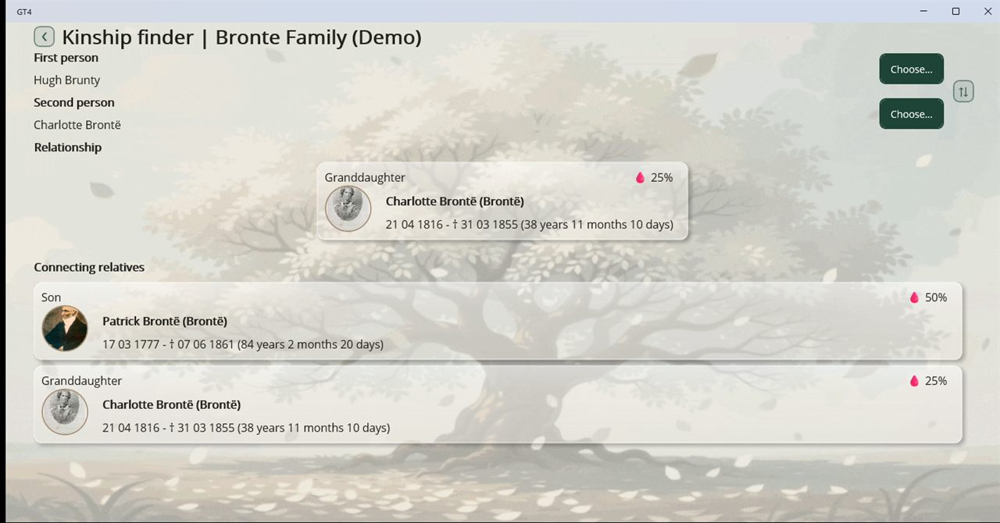
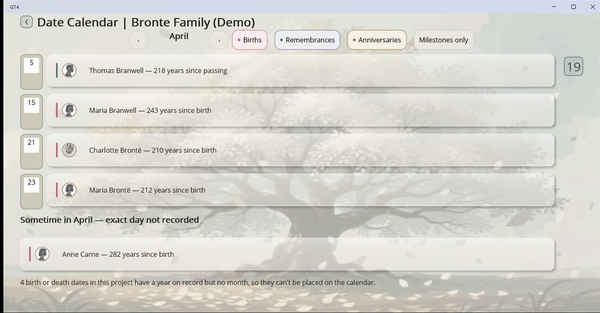
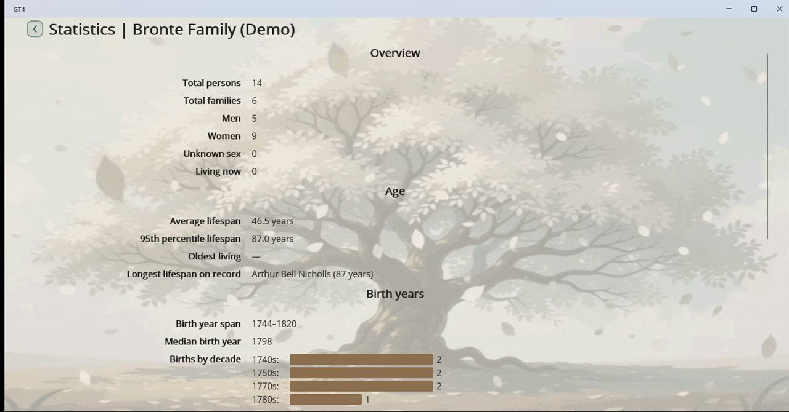

User guide
A tour of Genealogy Tree, from your first project to sharing your research. Names in bold are the labels you'll see in the app.
1. Getting started
Everything you record lives in a project, also called a genealogy
tree. A project is one .gt4 file in the GT4 folder
of your Documents. You can keep as many projects as you like, for example
separate trees for separate branches, or a scratch tree next to the real one.
- Try the demo first. While you have no projects yet, the project list offers Open the Demo Tree. It creates the Brontë Family (Demo) project, with portraits and biographies, so you can explore every screen. It's safe to delete later.
- Start your own. Choose Create a Genealogy Tree and give the project a name.
-
Bring existing research. Choose 📥 Import and
pick a GEDCOM file (
.ged, or a.zipthat holds one with its media) or a.gt4project file. It becomes a new project.
Each page has its actions as a column of icon buttons: edit (🖋️), remove (❌), create (➕), filters (🔍), refresh (🔄️) and so on.
2. Families and people
Opening a project shows its Families. A family here is a surname group, such as Brontë or Branwell, with everyone who carries that family name listed under it. People who belong to no family are listed under No family.

- Choose Create a Family and enter the family name. Where a surname changes with sex, as in many Slavic languages, you can enter its male and female forms.
- Open the family and choose ➕ Create a Person.
- Fill in the person: Names (first name, patronymic, last name and family name; a person can have several), Biological sex, Dates of birth and death, Photos, Relationships, Biography and Attachments.
- Under Relationships, choose Add relationship, pick the relative and the type (Parent, Child, Spouse, or an adoptive parent or child), and optionally a start date such as a wedding date. Grandparents, siblings, in-laws and cousins are worked out from these links, so you never enter them yourself.
Dates don't have to be exact. A date can be complete, just a year, approximate ("about 1816") or unknown. Record what you actually know rather than inventing a day.
The 📝 To Names page lists every name used in the project, so you can correct a spelling once for everyone who shares it.
3. The person page
Select anyone to open their page: name, dates and age at the top, photos on the left, and two tabs, Relatives and Biography.
- Relatives lists everyone connected to this person with their relationship. Expand a relative to walk further along that branch, or use Expand all. Select a relative to open their page.
- Photos show the main portrait first; browse the others with the arrows and open any of them full screen. Each photo and attachment can have its own caption.
- Attachments can be any file: scans, certificates, PDFs, audio. Images open in the app's own viewer; other files open in whichever app you normally use for that type.
- ☆ Mark as main person makes this person the project's starting point. ⭐ Main person on the Families page then takes you straight to them.
- On Windows, right-click the name, the dates or the biography to Copy it, for example to search for it elsewhere.
4. Writing a biography
A biography is formatted text. Switch between Editor and View while you write. The toolbar has Bold, Italic, Heading and Bulleted list, plus:
- Link a Person: a link that opens another person's page.
- Link Media: pick any photo or attachment in the project (the person's own come first) and insert it as a Picture at a width you choose, or as a plain Link.

Details imported from GEDCOM that the app has no field for appear under Additional details and Family details. They are kept and written back out when you export to GEDCOM again.
5. The family tree
Open 🌳 Family tree from a person page, or 🌳 Main person's family tree from the Families page. The tree shows ancestors above and descendants below, with children centred under their parents.
- Select a relative to centre the tree on them.
- ▲ More ancestors and ▼ More descendants load further generations.
- The Relatives switch shows or hides siblings and cousins.
- Zoom with the zoom buttons. On Windows, Ctrl + + / - / 0 also zoom the tree; on Android, pinch. Drag the background to pan.
- Turn on Arrange and drag people sideways to place them yourself. 🔀 Reset arrangement undoes it.
- On Windows, right-click someone and choose Hide from tree. The 🙈 hidden button lists hidden people; Show all brings them back.
The app remembers arrangements and hidden people per project, on this device.
They're not stored inside the .gt4 file, so they stay behind
when you copy a project to another computer.
6. Kinship finder, calendar, statistics and gallery
These tools are on the Families page.
🩸 Kinship finder
Choose a First person and a Second person. The app shows their Relationship, such as "Grand aunt" or "Cousin once removed", and the Connecting relatives chain that links them. Swap reverses the question.

🗓️ Calendar
See who was born, married or is remembered on each day of the year. Filter by births, weddings or deaths, and spot milestone anniversaries. Dates known only to the month are listed separately, since there's no day to put them on.

📊 Statistics
Over twenty measures in sections: overview, age, birth years, names, data completeness and relationships. The data completeness section is a handy to-do list: people with no birth date, no photo or no relatives at all.

🖼 Gallery
Every photo and attachment in the project in one place, searchable by title or file name. Select one to view it or to go to the person or family it belongs to.
🔍 Filters
Lists can be narrowed by name, sex or year. Name search understands
* (any characters) and ? (one character). For example,
Ann* finds Ann, Anne and Annabel.
7. Importing and exporting
GEDCOM
GEDCOM is the common exchange format between genealogy programs. Genealogy Tree reads and writes GEDCOM 5.5.1.
- 📥 Import on the project list creates a new project from a GEDCOM file.
- 📥 Import from GEDCOM on the Families page merges a file into the open project: people who match an existing person are merged, and the rest are added. You're asked to confirm first. If the import fails or you cancel it, the project is left untouched.
- If a file declares an ambiguous character set, the app asks which Codepage it was written in, rather than guessing and garbling every name.
📤 Export
On the Families page, 📤 Export offers three formats:
| Format | What you get | Use it to |
|---|---|---|
| Export to GEDCOM | A .zip with the .ged file and its photos and attachments |
Move your tree to other genealogy software |
| Export to .gt4 | A copy of the whole project as one file | Back up, or open on another device with Genealogy Tree |
| Export to HTML | A .zip website with a page for every person and family |
Share with relatives who don't have the app; it opens in any browser |
The exported file is handed to your system's share dialog, so you can save or send it wherever you like.
An HTML export includes everyone, living people too, with every biography, photo and attachment. The app asks you to confirm before creating one. Think about who will see it before you put it online.
8. Revisions
📌 Revisions on the Families page lists earlier copies of the project that the app kept, for example after a session that didn't end cleanly. Choose Restore to go back to one, or remove the ones you don't need. These are restore points, not a record of every change.
9. Settings
The 🏠 Home page has the 🌐 Language picker and the ⚙️ button for the rest of the settings, which the project list also offers as ⚙️ Settings:
- Theme: System, Light or Dark.
- Text size: scales all text in the app. On Windows, use Ctrl + + / - / 0 anywhere; on Android, pinch.
- Calendar: show dates in the Gregorian, Julian, Hebrew or French Republican calendar. Dates are always stored as Gregorian, so you can switch at any time.
-
Date and name formats: how dates, ages and names are
written, for example
DD MMM YYYY, or the order of first name, patronymic and last name. - Read-only mode: hides everything that edits, creates or removes data. Useful when handing the app to someone just to browse.
- Background animation: turn the animated tree background on or off.
Something not covered here? See Support.